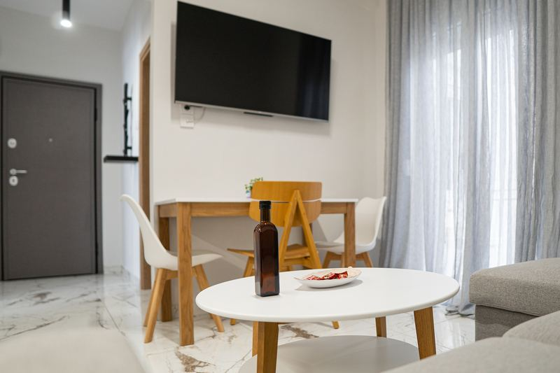

O smeštaju
do 6 osoba · 2 spavaće sobe · 2 kreveta · 1 kauč na razvlačenje · 1 kupatilo · 60 m²
Moderan, pažljivo uređen stan sa dve spavaće sobe i velikom privatnom terasom u Sjatisti.
Dnevni boravak sa ugaonom garniturom na razvlačenje, trpezarijskim stolom i velikim televizorom. Kuhinja je potpuno opremljena, sa rernom, pločom za kuvanje, frižiderom, mikrotalasnom i Nespresso aparatom.
Prva spavaća soba ima bračni krevet sa drvenim uzglavljem, radni sto, televizor i vrata ka terasi. Druga ima bračni krevet, televizor i noćne lampe koje menjaju boju.
Moderno kupatilo sa tuš stubom, drvenim pultom i osvetljenim ogledalom, sa peškirima i kozmetikom.
Velika terasa sa stolom i stolicama idealna je za jutarnju kafu. Na raspolaganju su i mašina za veš, pegla, fen i sef.
Sadržaji
- Velika terasa
- Wi-Fi
- Klima-uređaj
- Grejanje
- Televizor
- Potpuno opremljena kuhinja
- Nespresso aparat
- Rerna i mikrotalasna
- Mašina za veš
- Pegla i daska za peglanje
- Fen za kosu
- Sef
- Kauč na razvlačenje
- Radni sto
- Lampe sa promenom boje
- Posteljina
- Peškiri za kupanje i lice
- Bade-mantili
- Šampon i gel za tuširanje
- Četkice i pasta za zube
- Parking
- Kućni ljubimci na zahtev
- Bebi krevetac besplatno
Lokacija
Mitropoleos 19, 503 00 Siatista